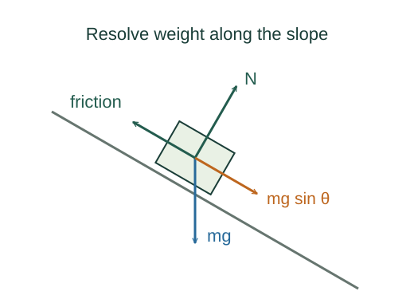

Static and kinetic friction on an incline
The elementary friction relations are approximate empirical models. The onset-of-sliding angle and the sliding acceleration are consequences of combining those models with Newton’s law.
What the symbols mean
μₛ, μₖ: dimensionless friction coefficients; N: normal-force magnitude; fₛ, fₖ: friction magnitudes.
When this applies
Dry surfaces described by the Coulomb friction model. For the incline result, only gravity and contact forces act; the slope is fixed.

Find the force needed to remain at rest
Down the plane gravity supplies mg sin θ. Static friction adjusts upward to balance it as long as its maximum value is not exceeded.
Go deeper at this stepDerive the weight components firstDerive the acceleration down an inclineApply the static limit
The inequality determines whether the required friction is available. Equality describes impending slip, not every static situation.
Solve for the critical slope
For 0 ≤ θ < 90°, divide by mg cos θ. At the boundary the tangent of the angle equals the coefficient.
Switch models once it slides
For motion down the slope, kinetic friction acts up it. Substitute its magnitude in Newton’s equation. If the block instead moves up the slope, friction reverses direction.
Where each equation comes from
Derived equations link to an argument below. Definitions, physical postulates and constitutive models are identified as the inputs of that argument.
Derivation of the main resultModel / constitutive input
Model / constitutive input. This relation is an explicit input at this level of the model, rather than a result proved by the equations that use it.
The elementary friction relations are approximate empirical models. The onset-of-sliding angle and the sliding acceleration are consequences of combining those models with Newton’s law.
Scope: Dry surfaces described by the Coulomb friction model. For the incline result, only gravity and contact forces act; the slope is fixed.
Equation in step 1Derived result
What is being shown: Find the force needed to remain at rest
Down the plane gravity supplies mg sin θ. Static friction adjusts upward to balance it as long as its maximum value is not exceeded.
Starting conditions and inputs: Dry surfaces described by the Coulomb friction model. For the incline result, only gravity and contact forces act; the slope is fixed.
Equation in step 2Derived result
What is being shown: Apply the static limit
The inequality determines whether the required friction is available. Equality describes impending slip, not every static situation.
Earlier results used in this argument:
- fₛ,required = mg sin θ; N = mg cos θ (Derived result)
Equation in step 3Derived result
What is being shown: Solve for the critical slope
For 0 ≤ θ < 90°, divide by mg cos θ. At the boundary the tangent of the angle equals the coefficient.
Earlier results used in this argument:
- fₛ,required = mg sin θ; N = mg cos θ (Derived result)
- mg sin θ ≤ μₛmg cos θ (Derived result)
Equation in step 4Derived result
What is being shown: Switch models once it slides
For motion down the slope, kinetic friction acts up it. Substitute its magnitude in Newton’s equation. If the block instead moves up the slope, friction reverses direction.
Earlier results used in this argument:
- fₛ,required = mg sin θ; N = mg cos θ (Derived result)
- mg sin θ ≤ μₛmg cos θ (Derived result)
- tan θ ≤ μₛ; θcritical = arctan μₛ (Derived result)
A worked example
With μₛ = 0.50, the limiting angle is 26.6°. A resting block on a 10° slope has friction mg sin 10°, less than μₛN.
Derivation behind this calculation ↗A point to keep straight
Static friction is not always μₛN. Its magnitude and direction respond to the tendency to slip.
Check the assumptions and derivation ↗